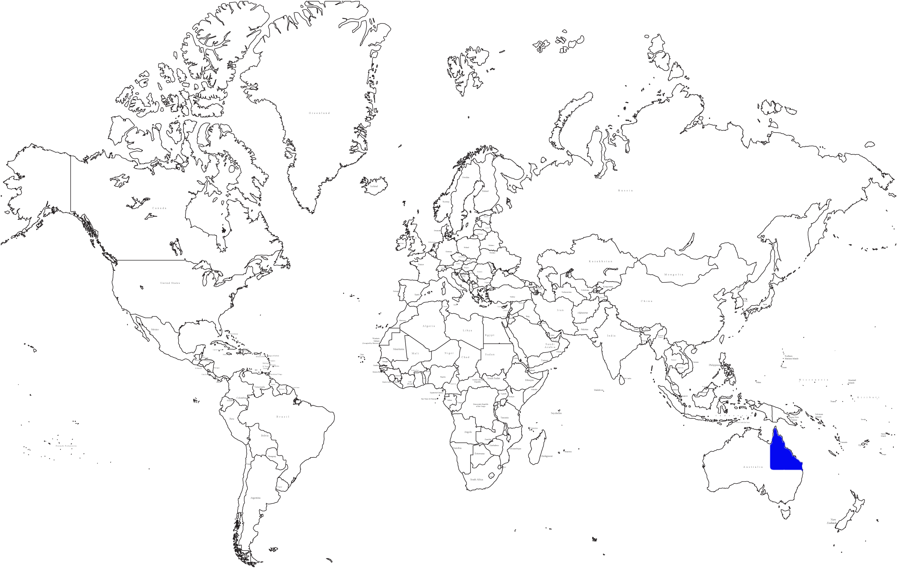

A new animal has been discovered in Queensland, Australia. This animal is called the Camefrog (Chamaeleo Idrisglossussauros). The Camefrog is a Veiled chameleon(Chamaeleo calyptratus) crossed with an Australian bullfrog(Limnodynastes interioris).
The Camefrog is most closely related to the Veiled chameleon(Chamaeleo calyptratus). The Camefrog’s name means smart tongued lizard. It has this name because it’s tongue is a missile which is directed at it’s prey which is a smart why to hunt. The Camefrog is in: Kingdom: Animalie Phylum:Chorodata Sub-phylum: Vertebrata Class: Reptilia Order: Squamata Sub-Order: Lacertilia Infraorder: Iguanidae Family: Chamaeleonidae Subfamily: Chamaeleonidae Genus: Chamaeleo Species: Idrisglossussauros Design and Features
The Camefrog looks like a veiled chameleon. It has a very strong leg muscles to propel it up to 5 meters heigh. The Camefrog has a rough skin that can change colour to match with it's surroundings and also has a very long tongue which it shoots at it's prey. The tongue sticks to the prey and pulls it back to the Camefrog so it can be eaten. The Camefrog isn't a parasite and doesn't have jointed legs. The Camefrog has an internal skeleton. It breaths using lungs and doesn't have gills. The Camefrog is a cold blooded animal which means it can't heat itself so it uses the sun. The Camefrog has a shape on it's back which shows it's gender. It is blue for males and purple for females. The Camefrog skin is naturally a rough multicoloured stripe.

Camefrog's are mainly hunted by snakes and birds. The main way the Camefrog escapes from predators is using it's colour changing skin it uses that to camouflage with it's surroundings.
The Camefrog is an insectivore which means it eats plants and insects. The Camefrog's favourite food is Stick Insects. It prefers insects but will eat certain plants if needed. The Camefrog's main diet consists of Stick Insects, Crickets, Praying Mantis, Cockroach, Worms, Flies and Slugs.
The Camefrog lives in the trees's of tropical rainforests of north Queensland. It has to find the food in the tree but sometimes has to comes down from the tree's to find food. The Camefrog usually live in a area near water.
Hover With Mouse On The Camefrog to See The Labels
The Camefrog's Skelton mainly consists of a backbone with ribs coming off it to protect the main body's organs. It also has a cranium at the front that protects the brain. The Top Fin of the Camefrog is made from cartridge so it does not contain a bone. There are rings in between the disks in the spine. This is to allow the spine to bend and move so the animal doesn't have to stay in a fixed position. The Camefrog has a caged skeleton around it's body holding it together. The Camefrog has hinge joints on it's leg and where it's knee's are.
Hover With Mouse On The Camefrog to See The Labels
The Digestive System in the Camefrog is designed for it's diet. It is an insectivore which means it eats plants and insects. It has a smaller stomach and a shorter digestive track when compared to herbivores. It doesn't really have large intestines because it just has to slowly remove the nutrients from the plant and insects. It doesn't have a Cecum because insectivores do not have Cecum's. The oesophagus runs to the stomach near the bottom center of the Camerfrog and then the food goes into the intestines and all the nutrient is removed from the food. The stomach is in the center to allow the intestines lots of areas to be bigger and remove more nutrients from the food. Then it is ejected out the anus.
Hover With Mouse On The Camefrog to See The Labels
The respiratory system for the Came for contains a Mouth, Trachea, and Lungs. The Air comes into the Camefrog through it's mouth. It does not have a nose but has some holes just above the mouth that function to allow air into the respiratory system when the mouth is shut or contains food. These holes are really small and hard to see. The air travels down the Trachea and splits into the two sides of the lungs. There are ribs above the Lungs to protect them. These ribs are shown in the skeletal system. The ribs move with the lungs because of the Intercostal Muscles. The Diaphragm contracts and the Lungs expand. The pressure pulls the air from the Trachea and Mouth down into the Alveoli were the gas transfer takes place.
Hover With Mouse On The Camefrog to See The Labels
The Camefrog is a cold blooded animal. It sits out in the sun to warm the blood up. It has a 2 circuit Circulatory System. There is Pulmonary Circulation and Systemic Circulation. The Blood Vessels run in a mesh around the animal. They go to all body parts. The blood is Oxygenated or Deoxygenated. The Heart is protected by the rib cage which is show in the Skeletal System. The Camefrog's heart has 2 Chambers and does not have any mixing of Oxygenated and Deoxygenated blood.